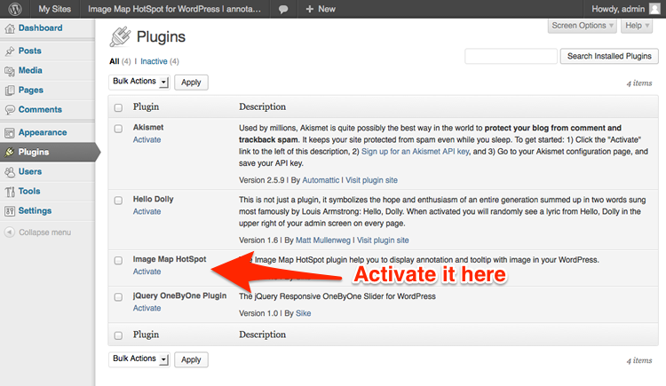
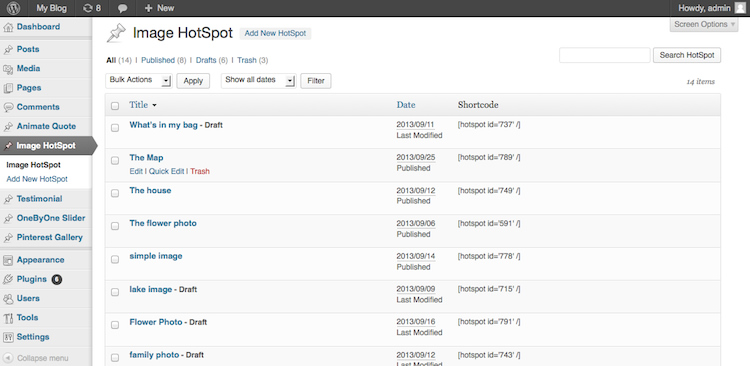
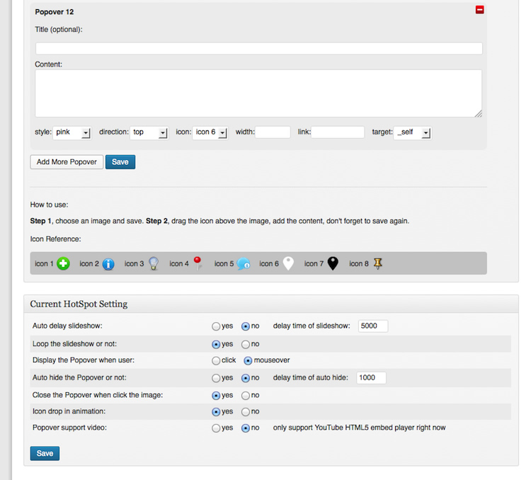
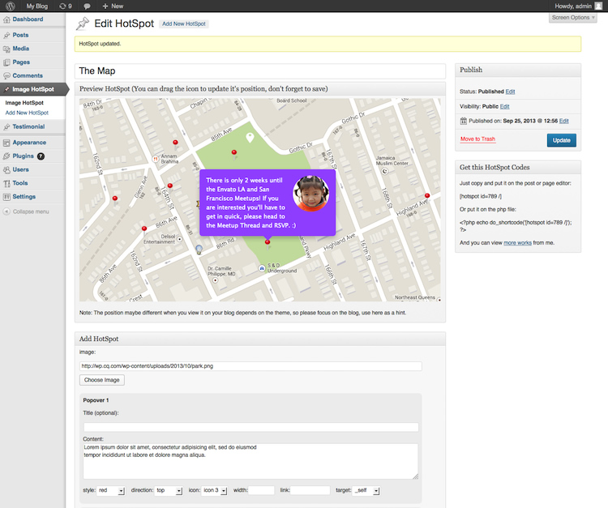
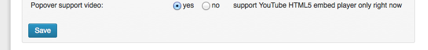

“Image Map HotSpot for WordPress” Documentation by “Sike”
“Image Map HotSpot for WordPress”
Created: 12 Sep 2013
Updated: 13 Feb 2014
By: Sike
Contact
Thank you for purchasing. And I appreciate if you can rate my item in the download section of codecanyon, thanks!
Table of Contents
A) Installation and Usage - top
How to install.
- Unzip and upload the folder to the /wp-content/plugins/ directory, via FTP, or upload the zip directly via WordPress's built in plugin uploader.
- Activate the Image Map HotSpot plugin through the 'Plugins' menu in WordPress 
How to use the HotSpot.
- In the front page of this plugin, you can view the available HotSpots you've created. Something like below: 
- The HotSpot edit page, you can add/update the image and pop-up tooltip here: 
- After save/publish the HotSpot, you can see the working preview on the above of the edit page. When the content is fine, you can copy the shortcode and put it in your post or page. 
Some hint:
- The default width of the Popover is 236, leave it to blank (and will be 236) if you want to responsive feature. Otherwise you can customize any width as you like.
- If you don't want the Popover just want the pin icon with a link, you'd better add the icon and update it's proper position and save first. Otherwise the icon link make you harder to drag and update it's position.
- The Popover only support YouTube HTML5 video player right now. And it only works with the Browser which support HTML5. So this is just more like a experiment feature.
First set the Popover support video to yes in the setting.

Then in the YouTube video page, get the iframe embed code. Add the html5=1 query to it, and fs=0 to disable the fullscreen button (just find the fullscreen doesn't work correctly in Lion).<iframe width="420" height="315" src="//www.youtube.com/embed/ebXB0lBoaQ0?html5=1&fs=0" frameborder="0" allowfullscreen></iframe>
After close/hide the Popover, the video will stop, and reload the video every time when display the Popover again. - Want to put small image in the Popover?
You can embed the image via HTML, and add the popover-floatleft or popover-floatright to align the image. For example, this is the code for the small circle avatar in the preview.
<img src="http://wp.cq.com/wp-content/uploads/2013/10/avatar_80.png" class="popover-floatright" alt="avatar" /> There is only 2 weeks until the Envato LA and San Francisco Meetups! We want you to be there but space is limited. If you are interested you'll have to get in quick, please head to the Meetup Thread and RSVP. :)
- How to use your own custom pin icon?
Scroll down in the setting area, add the 24x24 custom icon, it'll effect all the icons. Leave it to blank if you want use the prior built-in icon.
B) The source Folder - top
Contains the source code for this plugin, you can customize or add new function in the php file.
C)Credits - top
jQuery http://jquery.com
Icons:
http://www.icojam.com
http://jonasraskdesign.com
http://www.graphicrating.com
http://yummygum.com
D)Features: - top
- Easy to install and setup with WordPress.
- Different icons in same image.
- Optional size and color of the Popover.
- Pin icon support link only.
- Optional label under the pin icon.
- Optional drop in animation of pin icon, like map in iOS.
- Compatible with latest jQuery(1.10.x) and latest WordPress.
- Multiple HotSpot on same page.
- Enqueue the js and css only when needed. Keep WordPress page size smaller.
- You can add/edit the Image HotSpot without touching the code. Customize/update the image and text with WordPress backend.
- CSS3 transition support, fade only on the older browser, like IE8.
- Auto delay slideshow.
- FAQ and source code are included in the package. Free update in the future.